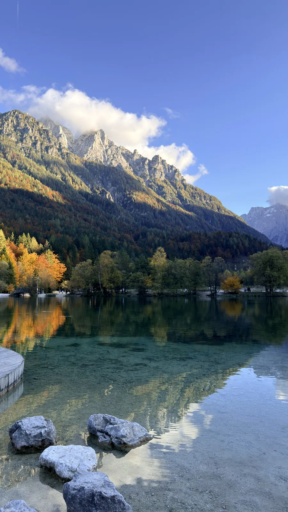
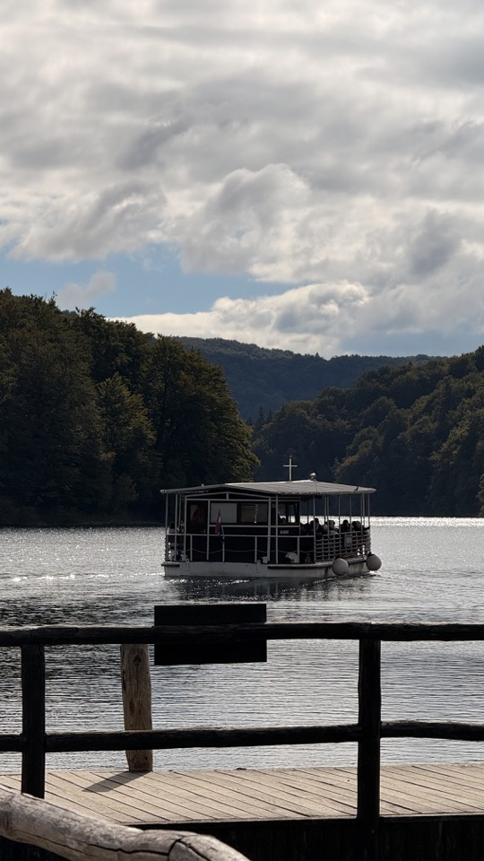
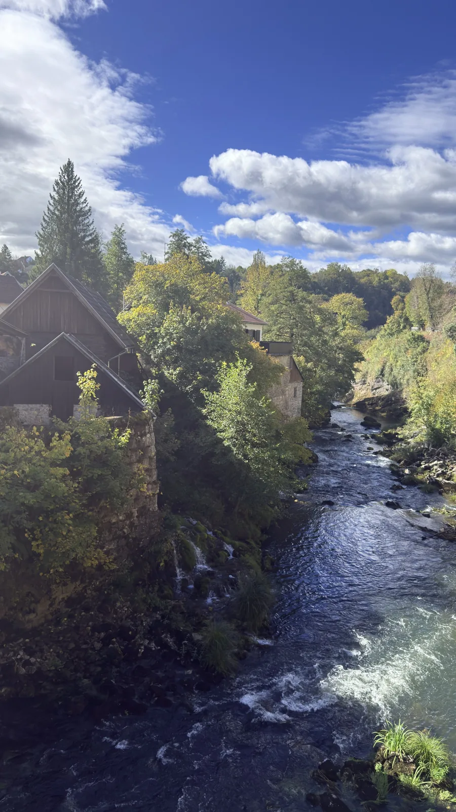
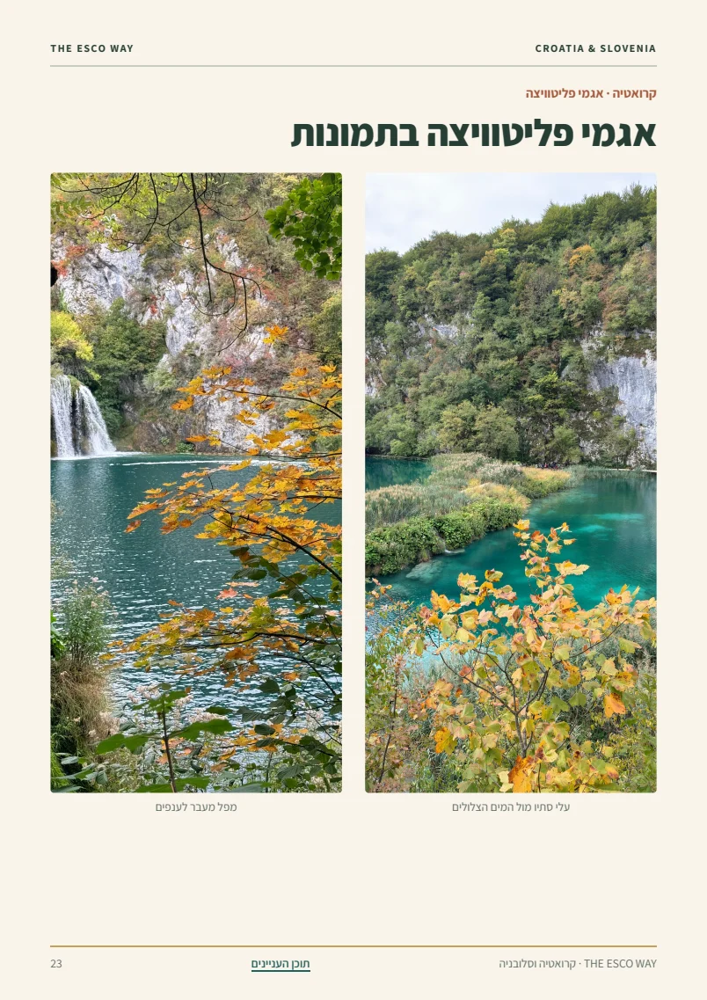
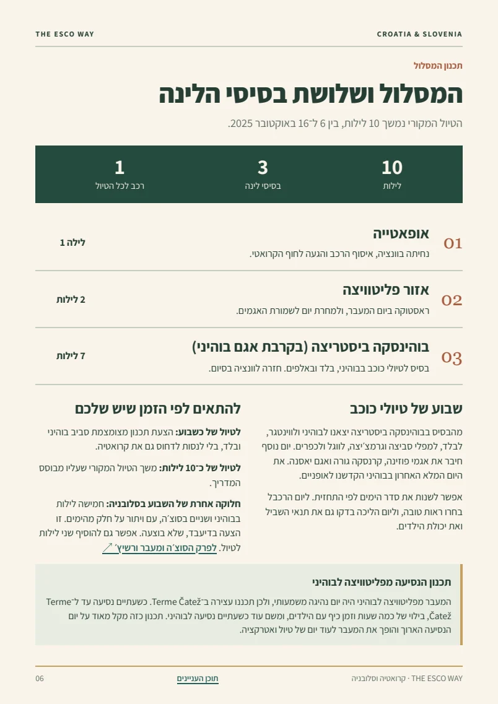

טיול אחד, שני נופים שונים לגמרי.
בחלק הקרואטי התקדמנו ממקום למקום. בסלובניה בחרנו בסיס אחד בבוהינסקה ביסטריצה. במדריך תמצאו את סדר הלינות והעצירות, כך שתוכלו להחליט איפה להמשיך הלאה ואיפה לפרוק את המזוודות לכמה ימים.
יצאנו מוונציה עם שני ילדים ורכב. בדרך עברנו באופטיה שעל החוף הקרואטי, הלכנו מעל המים בפליטביצה והתמקמנו ליד בוהין כדי לצאת בכל בוקר לפינה אחרת של ההרים.
לרכישת המדריך
בחלק הקרואטי התקדמנו ממקום למקום. בסלובניה בחרנו בסיס אחד בבוהינסקה ביסטריצה. במדריך תמצאו את סדר הלינות והעצירות, כך שתוכלו להחליט איפה להמשיך הלאה ואיפה לפרוק את המזוודות לכמה ימים.
בחרנו במסלול B, שמשלב הליכה על שבילי עץ ושיט באגם. בתמונה רואים את הסירה מהרציף שלנו. עם ילדים, גם השיט עצמו היה חלק מהיום.
בפרק על האזור תמצאו את הבחירה שלנו במסלול, את הלינה ליד השמורה ואת רסטוקה, הכפר שבו המים זורמים בין הבתים.


עצירה לחוף האדריאטי בתחילת הדרך מוונציה, לפני שפונים אל פנים קרואטיה.
אגמים שאפשר להגיע אליהם מאותו בסיס, לצד העלייה ברכבל לווגל לתצפית הררית.
יום באזור ההרים ואגם יאסנה, עם עצירות שאפשר לשלב לפי הקצב שלכם.
הרחבה שתכננו למי שיש לו עוד זמן באזור. בפרק אנחנו מפרידים בין המקומות שביקרנו בהם לבין ההצעות להמשך.
פתחו את עמוד המסלול כדי לראות איך חילקנו את הלילות בין אופטיה, פליטביצה ובוהינסקה ביסטריצה. לצדו תמצאו עמוד מצולם מהיום שלנו באגמים.
לצד המסלול תמצאו גם את מקומות הלינה שלנו ואת פירוט ההוצאות מהטיול.
לרכישת המדריך · 50 ₪

הבחירות שלנו לגבי לינה, חלוקת הנסיעות וימי הטבע התבססו על טיול עם שני ילדים קטנים. אפשר לקחת יום אחד כמו שהוא או לבחור מתוכו עצירה אחת.
אותם אגמים, כפרים ובסיסי לינה מתאימים גם לטיול עצמאי בזוג. תוכלו להתעכב בהרים או לחבר כמה עצירות ביום.
משאירים פרטים בחלון ההזמנה. נחזור אליכם להשלמת תשלום של 50 ₪ ונשלח קישור להורדת ה־PDF.
כל המסלול מוונציה לאלפים הסלובניים במדריך דיגיטלי אחד בעברית.
לרכישת המדריך · 50 ₪